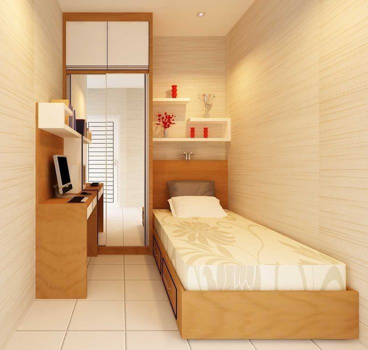
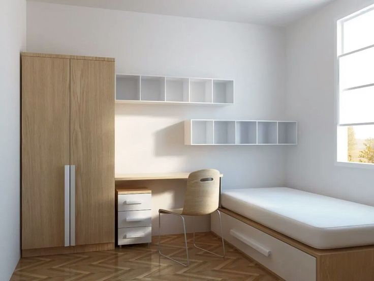
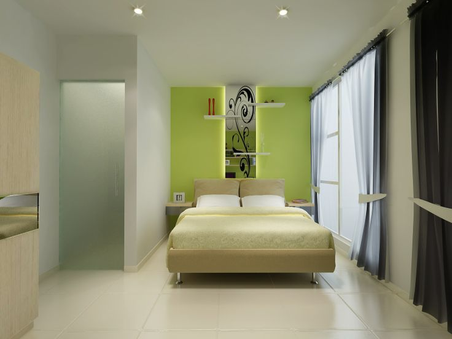
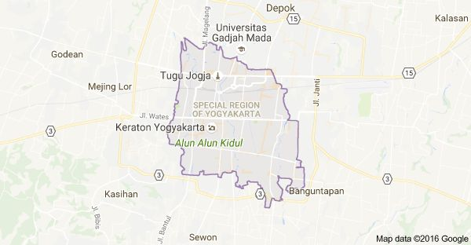

INKOST
Kost eksklusif di pusat kota dengan desain modern dan fasilitas lengkap untuk menunjang kenyamanan Anda. Lingkungan yang tenang dan aman, sangat cocok untuk mahasiswa maupun pekerja.
Kamar Mandi Dalam
Air Conditioner
Kasur & Lemari
Free WiFi
Area Parkir
CCTV 24 Jam
Fasilitas Pada Kost Inkost
Free WiFi
Kantin
Dapur Bersama
Laundry
Parkir Luas
PERATURAN KOST
Untuk menjaga kenyamanan dan keamanan bersama, seluruh penghuni diwajibkan untuk mematuhi peraturan yang telah ditetapkan. Pelanggaran terhadap peraturan dapat dikenakan sanksi.
Larangan Kost
- Dilarang membawa hewan peliharaan.
- Tamu lawan jenis dilarang menginap.
- Dilarang membuat keributan di atas jam 22:00.
- Dilarang merokok di dalam area kamar.
- Menjaga kebersihan area bersama.
Peta map

Lokasi Inkost
Terletak di lokasi yang strategis, dekat dengan universitas ternama, pusat perbelanjaan, dan akses transportasi umum. Membuat mobilitas Anda menjadi lebih mudah dan efisien.
Tempat Penting
Hanya 5 menit ke Universitas Gadjah Mada, 10 menit ke Malioboro, dan dikelilingi oleh berbagai kafe, restoran, serta minimarket yang dapat dijangkau dengan berjalan kaki.